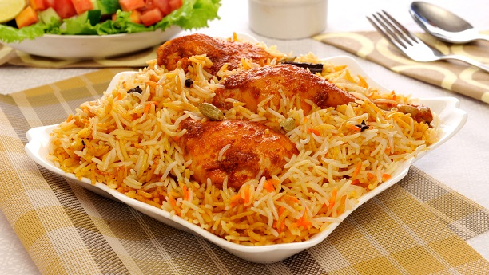
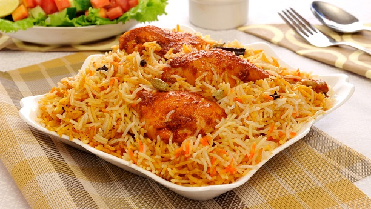
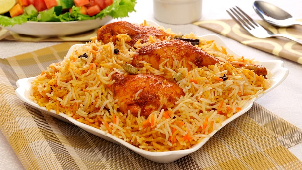

Chicken, beef, goat, lamb, prawn, and fish), o in some cases without meat, ometimes, n additn, eggs and potatoes.
Biryani is one ofpopanorderivy services, and has been labelled as the most popularl in Pakistan.
The exact origin of the aple istictietieyanigana, ndKarnataka (Bhatkal) where Muslim communities were present.
According to the ginatea, and was boreryani camndia with Timur't because there is no record of biryanisted in his native land during that period.
According to Pratibha Karan, who wrote the book Biryani, biryani is of Mughal origin, derived from pilaf varieties broughdero Malabar in South India.
There are various apocryphal sal pit he has not found a recipe. Other historians who have gone through texts say that tirst refers tani onlyar arounhe 18tt.
The main ingredient thaor raita, korma, curry, a sour dish of aubergine (brinjal), boiled egg, and salad.
Biryani can be cooked using one of two styles/techniques, pakki ("cooked") and kacchi ("raw").
